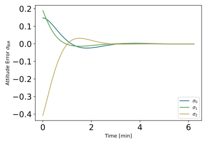
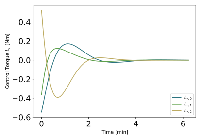
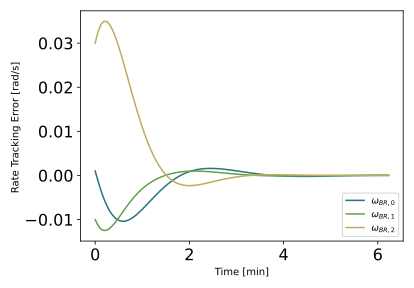

scenarioVizPoint
Illustration of Vizard showing a custom spacecraft camera view.
Overview
This scenario demonstrates how instantiate a visualization interface. This includes setting camera parameters and capture rates. This stems for an attitude detumble scenario, but focuses on pointing towards a celestial body in order to display the visualization Vizard, and show the camera capabilities.
The script is found in the folder basilisk/examples and executed by using:
python3 scenarioVizPoint.py
When the simulation completes 3 plots are shown for the MRP attitude history, the rate
tracking errors, as well as the control torque vector. The run() method is setup to write out the
Vizard data file to sub-folder _VizFiles/scenarioVizPoint_UnityViz.bin. By running Vizard
and playing back this data file you will see the custom camera view that is created as
illustrated in the Vizard snapshot above.
The simulation layout is identical the the scenarioAttitudeFeedback scenario when it comes to FSW modules The spacecraft starts in a tumble and controls it’s rate as well as points to the Earth.
Two mission scenarios can be simulated. The first one mimics the DSCOVR mission spacecraft and its EPIC camera pointing towards Earth. The second simulates a spacecraft orbiting about Mars. The attitude results are the same as the attitude feedback scenario, and pictured in the following plots. The differences lies in where they are pointing.
  In each case a spacecraft fixed camera is simulated.
This is done by connecting to the Module: vizInterface input message
cameraConfInMsg The Module: vizInterface module
checks this input message by default. If it is linked, then the camera information
is read in and sent across to Vizard to render out that camera view point image.
Open Vizard and play back the resulting simulation binary file to see the camera window.
DSCOVR Mission Setup
The first setup has the spacecraft pointing to Earth, from a distant, L1 vantage point. The scenario controls the spacecraft attitude to Earth pointing mode, and snaps pictures at a defined rate. This camera parameters are taken from NASA’s EPIC camera website on the date 2018 OCT 23 04:35:25.000 (UTC time). In this setup the pointing needs to be set to Earth, given it’s position.
Mars Orbit Setup
The second control scenario points the spacecraft towards Mars on a Mars orbit.
- scenarioVizPoint.run(show_plots, missionType, saveVizardFile)[source]
At the end of the python script you can specify the following example parameters.
- Parameters:
show_plots (bool) – Determines if the script should display plots
missionType (str) –
String
Definition
’dscovr’
Simulates the NASA DSCOVR mission
’marsOrbit’
Simulates an orbit about Mars
saveVizardFile (bool) – Flag to save off the Vizard data file